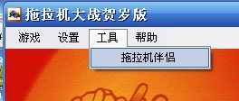
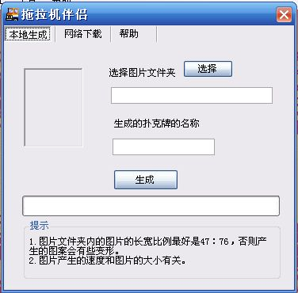
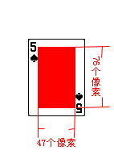

利用拖拉机伴侣这个插件，您可以方便制作出自己喜欢的牌面，在玩这个游戏时使用自己制作的漂亮的界面。
想必您收集了不少的漂亮的图片，或许您也拍摄了不少的自己的数码照片，抑或您想制作类似在伊拉克的美军发布的通缉令扑克，那么就使用拖拉机伴侣吧。
首先打开菜单“工具”－>“拖拉机伴侣”:
点击这个菜单将启动拖拉机伴侣工具：

首先点击选择按钮选择您的图片所在的位置。
因为一套扑克牌是54张牌面，所以您的文件夹中应当至少有54张牌，如果少于54张，那么制作出来的扑克牌有些牌面有重复。
原始图片的长宽比例最好为47:76左右，这样制作出来的牌面最美观：

扑克牌的名称为制作好的扑克的名称，在拖拉机大战的游戏中可以直接使用。
点击生成按钮，将自动生成扑克牌画面。